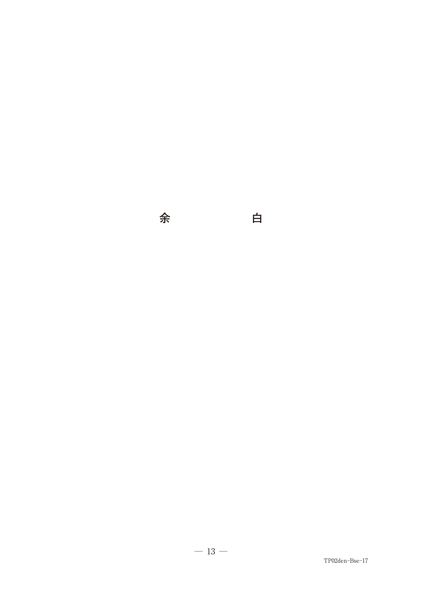
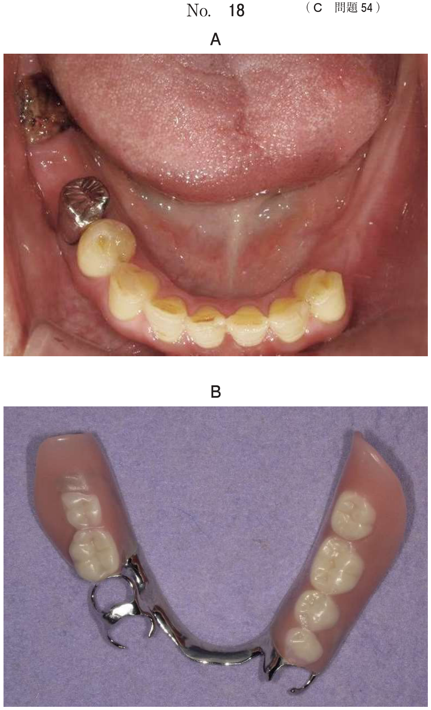

GTR法
定義
GTR法（guided tissue regeneration method：組織再生誘導法）は、非吸収性膜または吸収性膜を用いて、歯肉上皮および歯肉結合組織細胞の根尖側方向への移動を阻止し、歯根膜組織由来の細胞を歯根面へ誘導することで新付着を形成する歯周組織再生療法の1つである。
生物学的原理（Melcherの仮説）
創傷部位には4つの組織由来の細胞が競合して移動する：
- ①歯肉上皮
- ②歯肉結合組織
- ③歯槽骨
- ④歯根膜
- GTR法なし：歯肉上皮由来細胞の移動が速く、長い上皮性付着による治癒
- GTR法あり：膜が上皮・結合組織の侵入を阻止 → 歯根膜由来細胞を誘導 → 結合組織性付着を伴う歯周組織再生
GTR膜の種類
非吸収性膜と吸収性膜の比較
| 種類 | 材料 | 利点 | 欠点 |
|---|---|---|---|
| 非吸収性膜 | ePTFE（延伸加工ポリテトラフルオロエチレン） | 長期間の細胞遮断性・スペースメイキング、新生組織の確認可能 | 二次手術が必要、膜露出時の感染リスク |
| 吸収性膜 | コラーゲン膜、合成高分子膜（乳酸-グリコール酸共重合体） | 二次手術不要、患者負担少ない | 新生組織の確認不可、スペースメイキング困難 |
非吸収性膜の構造
- カラー部：歯肉上皮細胞の根尖側への侵入を防ぐ
- スカート部：歯肉結合組織の侵入を防ぎ、スペースメイキング能を有する
GTR膜の所要条件
- 生体親和性：歯周組織に親和性を有する
- 細胞遮断性：上皮・結合組織細胞の侵入を防ぐ
- 歯肉縁線との結合：膜の露出を阻止
- スペースメイキング：歯根膜由来細胞の誘導スペースを確保
- 操作性：骨欠損形態への適合、固定、被覆が可能
適応症と禁忌症
適応症
| 病変 | 条件 |
|---|---|
| 根分岐部病変 | Lindhe 1度・2度、Glickman 2級、ルートトランクが長いもの |
| 垂直性骨欠損 | 2壁性・3壁性骨欠損 |
| その他 | 臼歯部に十分な幅の角化歯肉が存在 |
禁忌症
- 一般的な歯周外科治療が行えない全身状態
- 重度の根分岐部病変（Lindhe 3度、Glickman 3・4級）
- 水平性骨欠損
- GTR膜をフラップで被覆できない場合
- 残存歯根膜組織の著しい減少を伴う重度の病変
術式の要点
- 術前のプラークコントロールが重要
- 喫煙は治癒を阻害するため禁煙指導
- フラップの形成：歯肉溝内切開または内斜切開
- 不良肉芽の除去および徹底したSRP
- GTR膜の調整と応用：欠損部を過不足なく覆う
- フラップの閉鎖：緊密に縫合
過去問
39歳の男性。下顎左側臼歯部のブラッシング時の出血を主訴として来院した。慢性歯周炎と診断し、歯周基本治療後に歯周外科治療を行うこととした。歯周外科治療時の口腔内写真（別冊No.17A）と再評価時のエックス線写真（別冊No.17B）を別に示す。
⎾6に行う処置はどれか。1つ選べ。


b トンネリング
c へミセクション
d ルートリセクション
e ルートセパレーション
【解説】エックス線写真で2壁性の垂直性骨欠損が認められる。GTR法は2壁性・3壁性の垂直性骨欠損に適応。根分岐部病変の程度が軽度であり、両根とも保存可能なためヘミセクション等は不要。
骨縁下ポケットに適応できないのはどれか。1つ選べ。
b 歯肉切除術
c 歯周ポケット掻爬術
d エナメルタンパク質の応用
e Widman改良フラップ手術
【解説】歯肉切除術は骨縁下ポケットに適応できない（骨縁より根尖側にはアクセス不可）。GTR法、EMD、Widman改良フラップ手術は骨縁下ポケット（垂直性骨欠損）に適応可能。
根分岐部病変の治療で用いられるのはどれか。すべて選べ。
b トンネリング
c ヘミセクション
d 遊離歯肉移植術
e 歯肉弁側方移動術
【解説】根分岐部病変の治療にはGTR法（1〜2度）、トンネリング（2〜3度）、ヘミセクション（2〜3度）が用いられる。遊離歯肉移植術と歯肉弁側方移動術は歯周形成手術であり、根分岐部病変の治療には用いない。
66歳の女性。下顎左側臼歯部の違和感を主訴として来院した。5年前から骨粗鬆症の治療を受けているという。慢性歯周炎と診断し、歯周基本治療を行った。
続いて行うのはどれか。2つ選べ。


b 歯肉切除術
c 組織再生誘導法
d 歯周ポケット掻爬術
e 内科主治医への対診
【解説】垂直性骨欠損がありGTR法（組織再生誘導法）の適応。骨粗鬆症の治療を受けているため、BP製剤やデノスマブ服用の可能性があり、内科主治医への対診が必要。